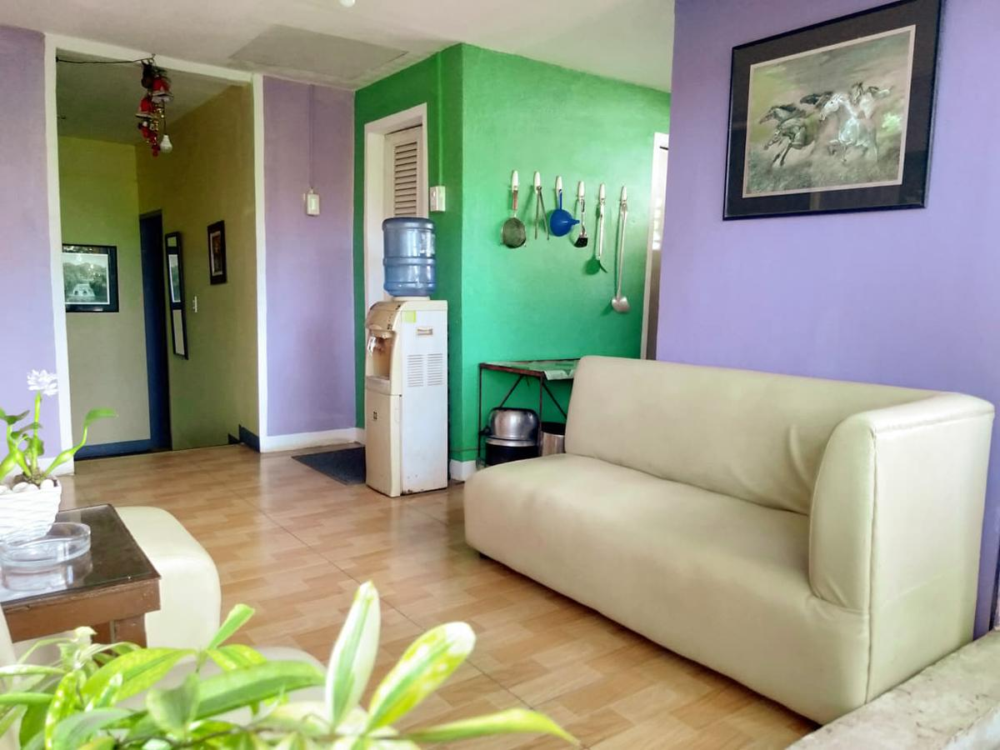
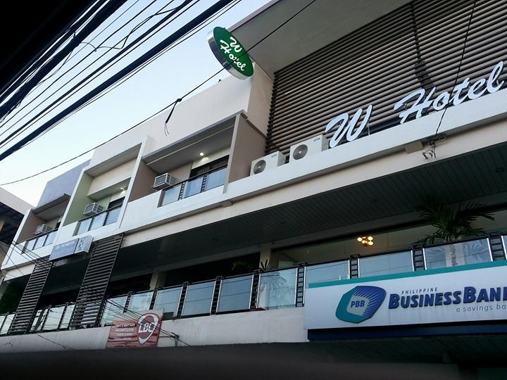

"Found in Mindanao, Zamboanga City is dubbed as the “Asia’s Latin City.” It’s quite big and packed with historical sites like the Fort Pilar and Museum, where the Spanish colonial government built the 17th-century military defense fortress. Some of its natural wonders include the Great Sta. Cruz, which is famous for its pink coralline sand. The city is known for the Zamboanga La Hermosa Festival, a colorful event where vintas, traditional Philippine boats, are taken out to sea for a competition."

"Found in Mindanao, Zamboanga City is dubbed as the “Asia’s Latin City.” It’s quite big and packed with historical sites like the Fort Pilar and Museum, where the Spanish colonial government built the 17th-century military defense fortress. Some of its natural wonders include the Great Sta. Cruz, which is famous for its pink coralline sand. The city is known for the Zamboanga La Hermosa Festival, a colorful event where vintas, traditional Philippine boats, are taken out to sea for a competition."
Traveling – it leaves you speechless,
then turns you into a storyteller
- Isteraha Haven Inn
- W Hotel
- Marcian Business Hotel
- Marcian Garden Hotel
- L' Meridian Suite
-
Located in Zamboanga, 2.2 mi from Fort Pilar, L' Meridian Suite features accommodations with a restaurant and free private parking. The accommodations offers a 24-hour front desk, room service and luggage storage for guests.
The units in the hotel are fitted with a flat-screen TV with satellite channels. All rooms at L' Meridian Suite have air conditioning and a desk.
Guests at the accommodations can enjoy a continental or a à la carte breakfast.
The nearest airport is Zamboanga International Airport, 0.6 mi from L' Meridian Suite.
- Cityinn Hotel
- RIDO Apartment & Residence (Kwarto Adorada)
Located just 3.7 mi from Fort Pilar, RIDO Apartment & Residence (Kwarto Adorada) provides accommodations in Zamboanga with access to a garden, barbecue facilities, as well as dry cleaning services. This apartment features free private parking and a shared kitchen.
This apartment has 2 bedrooms, a kitchen, a flat-screen TV, a seating area and 1 bathroom with a shower.
The apartment offers a sun terrace. A car rental service is available at Rido apt and Residence.
The nearest airport is Zamboanga International Airport, 2.5 mi from the accommodations.

Located in Zamboanga, 1.5 mi from Fort Pilar, Isteraha Haven Inn features accommodations with a shared lounge, free private parking and a garden. Boasting family rooms, this property also provides guests with a sun terrace. The accommodations provides a 24-hour front desk, airport transfers, room service and free WiFi throughout the property.
At the hotel, rooms are fitted with air conditioning and a flat-screen TV.
Isteraha Haven Inn offers a continental or à la carte breakfast.
The nearest airport is Zamboanga International Airport, 1.9 mi from the accommodations.

Located in Zamboanga, Mindanao region, W Hotel is located 1.1 mi from Fort Pilar. Boasting a 24-hour front desk, this property also provides guests with a restaurant. The accommodations features room service, an ATM and luggage storage for guests.
All rooms are fitted with air conditioning, a flat-screen TV with cable channels, a fridge, a kettle, a bidet, a hairdryer and a desk. The private bathroom is fitted with a shower and free toiletries.
Guests at the hotel can enjoy a à la carte or an Asian breakfast.
The nearest airport is Zamboanga International, 2.2 mi from W Hotel, and the property offers a paid airport shuttle service.
Couples in particular like the location – they rated it 8.6 for a two-person trip.

Set in Zamboanga, Mindanao region, Marcian Business Hotel is located 0.9 mi from Fort Pilar. Among the facilities of this property are a restaurant, a 24-hour front desk and a shared lounge, along with free WiFi. The hotel has family rooms.
All guest rooms in the hotel are fitted with a kettle. At Marcian Business Hotel all rooms are fitted with air conditioning and a TV.
à la carte and Asian breakfast options are available every morning at the accommodations.
The nearest airport is Zamboanga International, 1.2 mi from Marcian Business Hotel, and the property offers a free airport shuttle service.
Located in Zamboanga, 1.7 mi from Fort Pilar, Marcian Garden Hotel provides accommodations with a restaurant, free private parking, a bar and a garden. This 4-star hotel offers an ATM and a concierge service. The accommodations offers a 24-hour front desk, airport transfers, room service and free WiFi.
A à la carte breakfast is available daily at the hotel.
The nearest airport is Zamboanga International Airport, 0.6 mi from Marcian Garden Hotel.
Whether you're a tourist or traveling on business, Cityinn Hotel is a great choice for accommodation when visiting Zamboanga City. The excitement of the city center is only 1.9 km away. With its convenient location, the hotel offers easy access to the city's must-see destinations.
Cityinn Hotel offers impeccable service and all the essential amenities to invigorate travelers. The hotel provides free Wi-Fi in all rooms, 24-hour front desk, luggage storage, Wi-Fi in public areas, car park to ensure our guests the greatest comfort.
All guest accommodations feature thoughtful amenities to ensure an unparalleled sense of comfort. Besides, the hotel's host of recreational offerings ensures you have plenty to do during your stay. When you are looking for comfortable and convenient accommodations in Zamboanga City, make Cityinn Hotel your home away from home.